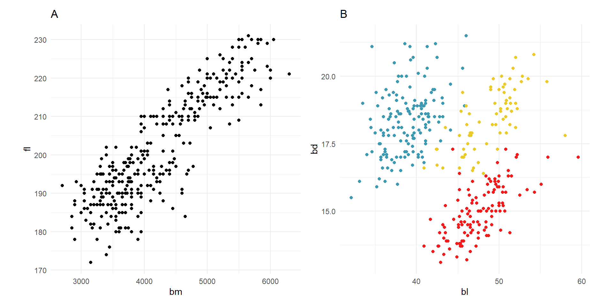
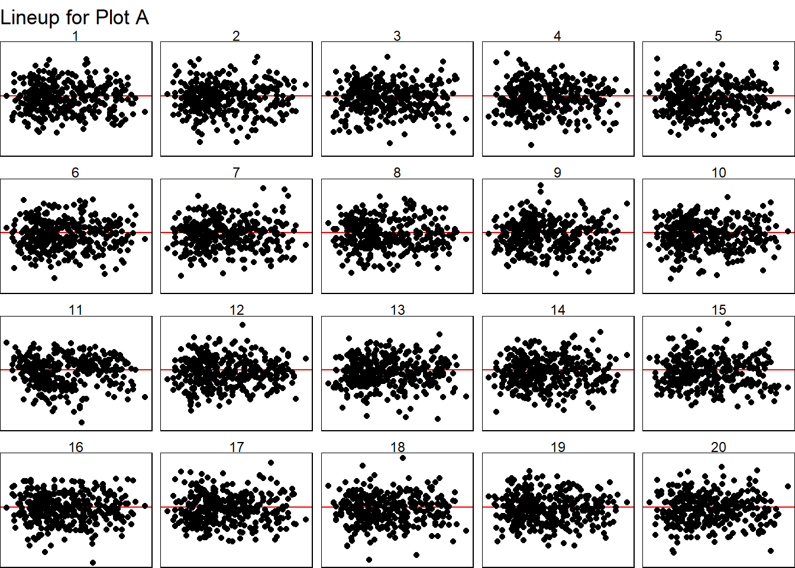
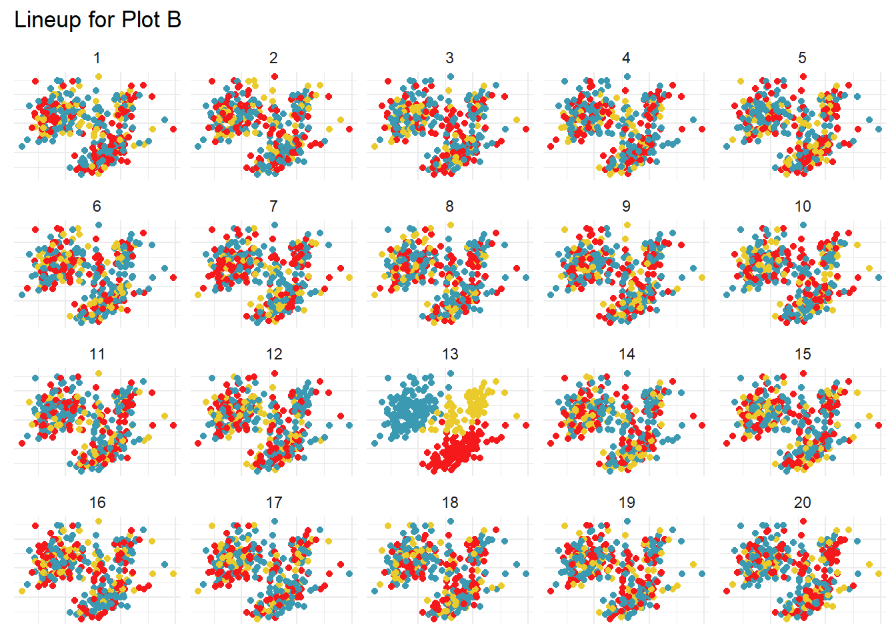

Q5
Exercise 5
In this exercise, you are asked to conduct inference to test for patterns in the penguins data.
- Pre-process the data to simplify the variable names to be
bl,bd,fl,bm, keeping only these variables and thespeciesvariable, and to remove the two missing values. - Make the two scatterplots A and B, one where the species is coloured, as shown below.
- Construct a lineup of size 20 for plot A, that will enable assessing the strength of the linear relationship between
bmandfl. Write down what is the null hypothesis, and how you have computed the null samples.
The null hypothesis \(H_0\) asserts that there is no strong linear relationship between the body mass (‘bm’) and flipper length (‘fl’) variables for penguins.
After fitting a linear regression model and performing data augmentation, the null samples were generated by randomly permuting the observed variable (flipper length) while maintaining the original body mass values unchanged. For each null sample, the ‘bm’ values remain as they are in the original dataset while the ‘fl’ values are shuffled randomly. This disrupts any potential linear relationship between the two variables, therefore simulating scenarios where any observed linear relationship between these variables is merely a result of random chance.
A visual test is then conducted to assess whether the observed linear relationship between body mass and flipper length is visually distinguishable from the linear relationships that would otherwise arise by chance.
set.seed(24681235)
penguins_bm_fl_fit <- lm(fl ~ bm,
data = penguins_sub)
penguins_bm_fl_m <-
augment(penguins_bm_fl_fit)
ggplot(lineup(null_lm(fl ~ bm, method = "rotate"), penguins_bm_fl_m),
aes(x=bm, y=.resid)) +
geom_hline(yintercept=1, colour="red") +
geom_point() +
facet_wrap(~.sample, ncol = 5) +
theme_void() +
theme(axis.text = element_blank(),
axis.title = element_blank(),
panel.border = element_rect(fill=NA, colour="black")) +
ggtitle("Lineup for Plot A")decrypt("Km1u A5d5 jP keGjdjeP BN")
- Construct a lineup of size 20 for plot B, that will enable assessing the strength of the clustering of the three species. Write down what is the null hypothesis, and how you have computed the null samples.
The null hypothesis \(H_0\) proposes there is no inherent clustering among the three penguin species based on their bill length (‘bl’) and bill depth (‘bd’) attributes. To evaluate this, we computed the null samples through random permutation as well. We randomly permute the species variable while keeping the bill depth and bill length values unchanged; this disrupts any initial clustering patterns present for the three species and simulates scenarios where any observed clustering structure is a product of random variability (i.e. no distinct clusters).
We then use a visual test to assess whether the observed grouping of species based on ‘bl’ and ‘bd’ is visually distinguishable from the other clustering patterns that would otherwise arise by chance.
set.seed(14578963)
ggplot(lineup(null_permute('species'), penguins_sub),
aes(x=bl, y=bd, colour=species)) +
geom_point() +
scale_color_discrete_divergingx(palette="Zissou 1") +
theme_minimal() +
facet_wrap(~.sample) +
theme(axis.text = element_blank(),
axis.title = element_blank(),
legend.position = "none") +
ggtitle("Lineup for Plot B")decrypt("Km1u A5d5 jP keGjdjeP Bx")
- Show your lineups to 8 friends, individually, who are not taking this unit, and ask them to choose the most different plot, and to explain to you why they have made that choice. Compute and report the \(p\)-value, and summarise the reasons that your friends made. (You need to show this to each friend individually so that you get an independent evaluation of the plot.)
For Plot A: only 1 out of 8 friends chose plot 11 which is the true data’s position. The p-value (which represents the probability that the observed linear relationship between body mass and flipper length occurred by chance) was calculated to be 0.3365796. As it is a relatively large p-value (higher than 0.05 significance level), this suggests there is insufficient evidence to reject the null hypothesis and we can conclude that the observed linear relationship between body mass and flipper lengths is not statistically significant for the penguins data.
nullabor::pvisual(1, 8, 20) x simulated binom
[1,] 1 0.3261 0.3365796Some of the main reasons for my peers’ plot selections are summarised below:
- Plots 2 and 9: Data seems to be more sparse/spread out towards the higher end.
- Plot 11: Seems to have a very slight negatively-skewed pattern than the rest.
- Plot 13: Data points are more clustered together compared to other plots.
Hence, there is difficulty in distinguishing the true plot in this lineup, and the observed linear relationship is not visually distinct since the true plot (which represents the actual data) is not that much different from the other null plots which represent scenarios where there is no real effect/linear relationship.
For Plot B: 8 out of 8 friends chose plot 13 which is the true data’s position. The p-value (which represents the probability that any observed clustering structure occurred by chance) was calculated to be 3.906253e-11. As this is an extremely small p-value, there is evidence to reject the null hypothesis and we can conclude that there is support for the presence of a significant and distinct clustering of the three penguin species based on their bill length and bill depth attributes.
nullabor::pvisual(8, 8, 20) x simulated binom
[1,] 8 0 3.906253e-11The main reasons for majority selecting Plot 13 as the most distinct are summarized below:
- Color Separation: Clear separation of colors, unlike mixed colors in other plots.
- Distinct Arrangement: Unique arrangement with clear split and concentration of colors.
- Red-Yellow Separation: Red and yellow colors are well-separated in Plot 13 compared to the rest.
- Distinctive Patterns: Clear patterns with separated colors, better separation between colors.
- Distinctive Color Groups: Colored dots grouped together, making the pattern clearer. Clusters are more easily distinguishable in Plot 13 due to distinct positions for blue, yellow, and red.